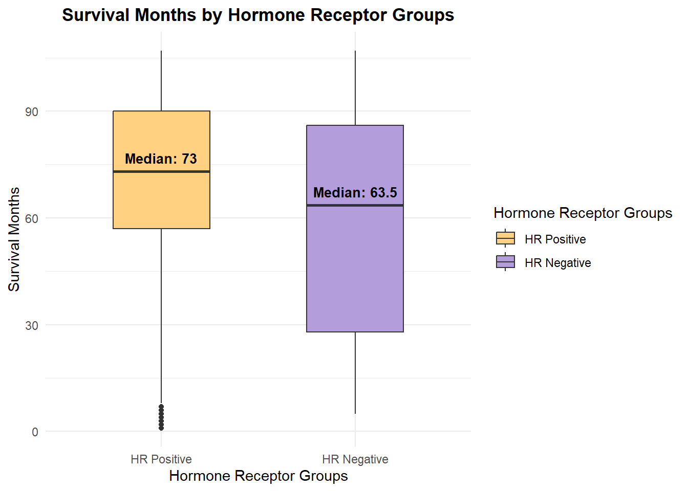
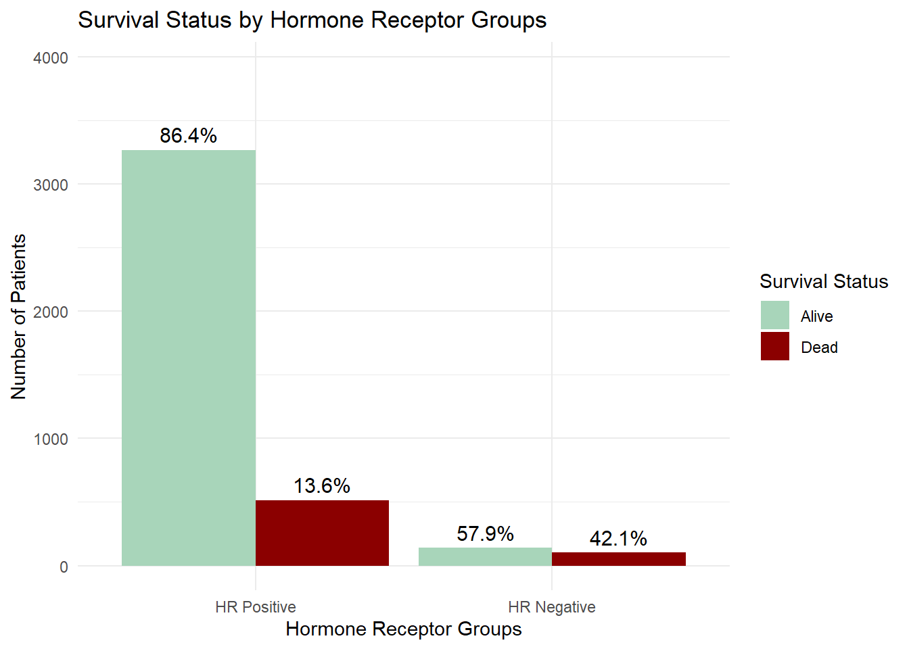
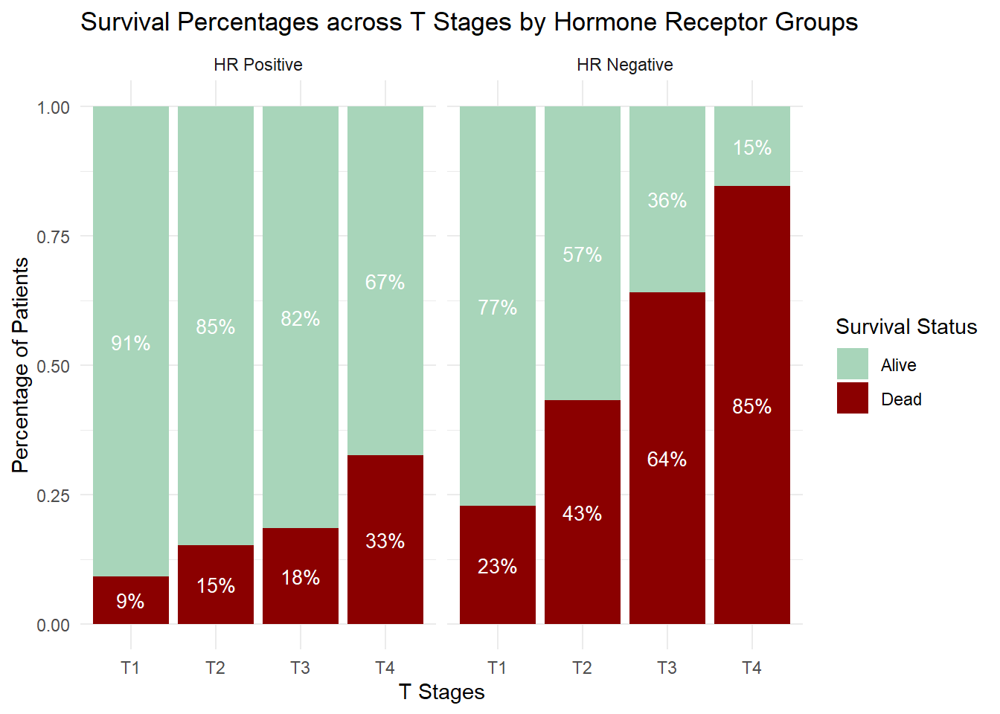

Code
knitr::include_graphics("mayo_clinic_logo.png")knitr::include_graphics("mayo_clinic_logo.png")Mayo Clinic, one of the leading cancer organisations in the U.S., offers diagnosis, research, and treatment for breast cancer.
The report analyses the differences in survival time and outcomes between Hormone Receptor Positive (HR+) and Hormone Receptor Negative (HR-) groups can assist further research on treatment methods and strategies.
HR- group has shorter survival time and higher mortality rate especially in T3,4 compared to HR+ group. It is recommended to implement proactive monitoring with greater focus on the HR- group to track cancer progression, preventing advancement to later stages and investigate efficient advancing treatments for HR- cancer type.
According to the American Cancer Society (ACS), breast cancer patients are classified as HR+ if at least one hormone receptor is positive, and as HR- if both are negative. ACS also states that HR- breast cancer has fewer treatment options, and is associated with poorer prognosis and lower survival time.
### survival months and hormone receptor groups
library(dplyr)
library(ggplot2)
library(tidyverse)
###readingdata
data=read.csv("breast_cancer.csv")
###grouping positive hormones ER+ PR+
data <- data %>% mutate( Estrogen.Status = factor(Estrogen.Status, levels = c("Negative", "Positive")), Progesterone.Status = factor(Progesterone.Status, levels = c("Negative", "Positive")), hormone_status = case_when( Estrogen.Status == "Positive" & Progesterone.Status == "Positive" ~ "HR+/+", Estrogen.Status == "Positive" & Progesterone.Status == "Negative" ~ "HR+/-", Estrogen.Status == "Negative" & Progesterone.Status == "Positive" ~ "HR-/+", Estrogen.Status == "Negative" & Progesterone.Status == "Negative" ~ "HR-/-", TRUE ~ "Unknown" ) )
# Create a new column to group hormone status
data <- data %>%
mutate(hormone_group = case_when(
hormone_status %in% c("HR+/+", "HR+/-", "HR-/+") ~ "HR Positive",
hormone_status == "HR-/-" ~ "HR Negative",
TRUE ~ "Unknown"
))
data$hormone_group <- factor(data$hormone_group, levels = c("HR Positive", "HR Negative"))
# Calculate median for each hormone group
summary_stats <- data %>%
group_by(hormone_group) %>%
summarise(median = median(Survival.Months, na.rm = TRUE))
# Plot
ggplot(data, aes(x = hormone_group, y = Survival.Months, fill = hormone_group)) +
geom_boxplot(width = 0.5) +
geom_text(data = summary_stats,
aes(x = hormone_group, y = median, label = paste("Median:", round(median, 1))),
vjust = -0.8, fontface = "bold", size = 3.5, inherit.aes = FALSE) +
labs(
title = "Survival Months by Hormone Receptor Groups",
x = "Hormone Receptor Groups",
y = "Survival Months"
) +
theme_minimal() +
theme(
plot.title = element_text(hjust = 0.5, face = "bold")
) +
scale_fill_manual(
name = "Hormone Receptor Groups",
values = c(
"HR Positive" = "#FFD180",
"HR Negative" = "#B39DDB"
))
HR+ patients have a higher median survival of 73 months compared to 64 months for HR- patients, along with a narrower interquartile range (33 vs. 58 months), indicating longer and more consistent survival times. However, despite this overall advantage, some HR+ patients had extremely short survival durations (1-4 months), even lower than the HR- group’s minimum, which may suggest late diagnosis or aggressive tumor growth.
###survival status and hormone receptor group
library(dplyr)
library(ggplot2)
library(tidyverse)
###readingdata
data=read.csv("breast_cancer.csv")
###grouping positive hormones ER+ PR+
data <- data %>% mutate( Estrogen.Status = factor(Estrogen.Status, levels = c("Negative", "Positive")), Progesterone.Status = factor(Progesterone.Status, levels = c("Negative", "Positive")), hormone_status = case_when( Estrogen.Status == "Positive" & Progesterone.Status == "Positive" ~ "HR+/+", Estrogen.Status == "Positive" & Progesterone.Status == "Negative" ~ "HR+/-", Estrogen.Status == "Negative" & Progesterone.Status == "Positive" ~ "HR-/+", Estrogen.Status == "Negative" & Progesterone.Status == "Negative" ~ "HR-/-", TRUE ~ "Unknown" ) )
# Create a new column to group hormone status
data <- data %>%
mutate(hormone_group = case_when(
hormone_status %in% c("HR+/+", "HR+/-", "HR-/+") ~ "HR Positive",
hormone_status == "HR-/-" ~ "HR Negative",
TRUE ~ "Unknown"
))
data$hormone_group <- factor(data$hormone_group, levels = c("HR Positive", "HR Negative"))
data <- data %>%
mutate(
Status = factor(Status, levels = c("Alive", "Dead")),
hormone_group = case_when(
hormone_status %in% c("HR+/+", "HR+/-", "HR-/+") ~ "HR Positive",
hormone_status == "HR-/-" ~ "HR Negative",
TRUE ~ "Unknown"
)
)
# Calculate counts and percentages
plot_data <- data %>%
group_by(hormone_group, Status) %>%
summarise(count = n(), .groups = 'drop') %>%
group_by(hormone_group) %>%
mutate(percent = count / sum(count) * 100)
# Plot with dodge bars and percentage labels
plot_data$hormone_group <- factor(plot_data$hormone_group, levels = c("HR Positive", "HR Negative"))
ggplot(plot_data, aes(x = hormone_group, y = count, fill = Status)) +
geom_bar(stat = "identity", position = position_dodge(width = 0.9)) +
geom_text(aes(label = paste0(round(percent, 1), "%")),
position = position_dodge(width = 0.9),
vjust = -0.5, size = 4) +
labs(
title = "Survival Status by Hormone Receptor Groups",
x = "Hormone Receptor Groups",
y = "Number of Patients",
fill = "Survival Status"
) +
theme_minimal() +
scale_fill_manual(values = c("Alive" = "#A8D5BA",
"Dead" = "#8B0000")) +
ylim(0, max(plot_data$count) * 1.2) 
Graph 2 shows that HR+ patients have significantly better survival outcomes, with 86.4% alive compared to 57.9% of HR- patients. The 42.1% mortality rate among HR- patients (over three times higher than in the HR+ group) highlights the more aggressive nature of HR- breast cancer and the limited availability of effective treatments, consistent with findings from ACS.
### 3 VARIABLES
library(dplyr)
library(ggplot2)
library(tidyverse)
###readingdata
data=read.csv("breast_cancer.csv")
###grouping positive hormones ER+ PR+
data <- data %>% mutate( Estrogen.Status = factor(Estrogen.Status, levels = c("Negative", "Positive")), Progesterone.Status = factor(Progesterone.Status, levels = c("Negative", "Positive")), hormone_status = case_when( Estrogen.Status == "Positive" & Progesterone.Status == "Positive" ~ "HR+/+", Estrogen.Status == "Positive" & Progesterone.Status == "Negative" ~ "HR+/-", Estrogen.Status == "Negative" & Progesterone.Status == "Positive" ~ "HR-/+", Estrogen.Status == "Negative" & Progesterone.Status == "Negative" ~ "HR-/-", TRUE ~ "Unknown" ) )
# Create a new column to group hormone status
data <- data %>%
mutate(hormone_group = case_when(
hormone_status %in% c("HR+/+", "HR+/-", "HR-/+") ~ "HR Positive",
hormone_status == "HR-/-" ~ "HR Negative",
TRUE ~ "Unknown"
))
data$hormone_group <- factor(data$hormone_group, levels = c("HR Positive", "HR Negative"))
data <- data %>%
mutate(
Status = factor(Status, levels = c("Alive", "Dead")),
hormone_group = case_when(
hormone_status %in% c("HR+/+", "HR+/-", "HR-/+") ~ "HR Positive",
hormone_status == "HR-/-" ~ "HR Negative",
TRUE ~ "Unknown"
)
)
plot_data <- data %>%
group_by(hormone_group, T.Stage, Status) %>%
summarise(count = n(), .groups = "drop") %>%
group_by(hormone_group, T.Stage) %>%
mutate(percent = count / sum(count))
plot_data$hormone_group <- factor(plot_data$hormone_group, levels = c("HR Positive", "HR Negative"))
ggplot(plot_data, aes(x = T.Stage, y = percent, fill = Status)) +
geom_bar(stat = "identity", position = "stack") +
facet_wrap(~ hormone_group) +
geom_text(aes(label = scales::percent(percent, accuracy = 1)),
position = position_stack(vjust = 0.5), size = 3.5, color = "white") +
scale_fill_manual(values = c("Alive" = "#A8D5BA",
"Dead" = "#8B0000")) +
labs(
title = "Survival Percentages across T Stages by Hormone Receptor Groups",
x = "T Stages",
y = "Percentage of Patients",
fill = "Survival Status"
) +
theme_minimal()
Graph 3 further highlights the impact of HR status across tumor stages, by showing a sharp decline in survival across T stages for HR- patients: from 77% in T1 to 15% in T4. Mortality rates exceed survival in advanced stages of HR-, particularly at T4, where 85% of HR- patients died compared to only 33% in HR+. In constrast, HR+ patients maintain higher survival rates across all stages. This supports ACS research that HR- tumors are more aggressive and may require complex therapies (immunotherapy or targeted drugs), especially in advanced stages.
The evidence does not account for factors that may explain the 1-4 month survival times observed in some HR+ patients. It also overlooks key variables such as age, tumor size, and grade. Additionally, it assumes all patients had equal access to care and consistent monitoring. As the dataset was collected in 2017, the analysis may not reflect current outcomes. Moreover, the exclusion of patients who survived less than one month may distort the survival statistics for both groups.
Given the lower survival and higher mortality in HR- patients, especially in later stages, it is recommended that the Mayo Clinic implement proactive monitoring and early intervention strategies focused on this group to prevent progression to advanced stages. Additionally, prioritising research into new, effective treatments for HR- breast cancer is strongly advised to improve survival outcomes.
ChatGPT-4o
Dates of use of the AI tool:
12/05/2025
13/05/2025
14/05/2025
I used AI (ChatGPT-4o) to generate code for enhancing my graphs, including displaying medians on the boxplot, centering titles, adjusting colors for better aesthetics, and fixing the y-axis of the barplot to add heights for the barplot. This support was specifically applied to the first and second graphs. Overall, AI helped with the coding and improved the visual presentation of the graphs.
https://chatgpt.com/share/6824baaf-2700-800f-8d11-c53b80c4695e
Shared professional values: I respect the communities represented in the data and use it responsibly for analysis.
Ethical principles: I present all findings openly and transparently, clearly stating any limitations and assumptions that may affect my analysis.
https://isi-web.org/declaration-professional-ethics
American Cancer Society. (2021, November 8). Breast Cancer Hormone Receptor Status. https://www.cancer.org/cancer/types/breast-cancer/understanding-a-breast-cancer-diagnosis/breast-cancer-hormone-receptor-status.html
Testing. (2021, December 3). Estrogen Receptor and Progesterone Receptor Test. https://www.testing.com/tests/estrogen-receptor-progesterone-receptor-breast-cancer-testing/
American Cancer Society. (2023, March 1). Triple-negative Breast Cancer. https://www.cancer.org/cancer/types/breast-cancer/about/types-of-breast-cancer/triple-negative.html
American Cancer Society. (2022, April 12). Treatment of Triple-negative Breast Cancer. https://www.cancer.org/cancer/types/breast-cancer/treatment/treatment-of-triple-negative.html
13/05 drop-ins - assisted by James - was taught the coding for stacked bar graph, was recommended the percentage bar graph.
14/05 drop-ins - assisted by Ailysa - was taught to interpret the boxplot more efficiently.
15/05 data workshop - assisted by Grace and Lachlan - double-checked with Grace about the ethics statement and references. Lachlan assisted with hiding the code in the HTML file and displaying the client’s logo.
Ed discussion, grouping the data of two types of hormone status to 4 groups.